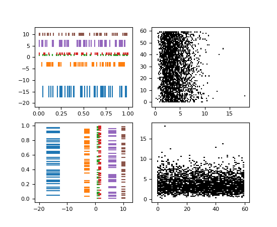

matplotlib.axes.Axes.eventplot¶
-
Axes.eventplot(positions, orientation='horizontal', lineoffsets=1, linelengths=1, linewidths=None, colors=None, linestyles='solid', *, data=None, **kwargs)[source]¶ Plot identical parallel lines at the given positions.
This type of plot is commonly used in neuroscience for representing neural events, where it is usually called a spike raster, dot raster, or raster plot.
However, it is useful in any situation where you wish to show the timing or position of multiple sets of discrete events, such as the arrival times of people to a business on each day of the month or the date of hurricanes each year of the last century.
Parameters: - positionsarray-like or list of array-like
A 1D array-like defines the positions of one sequence of events.
Multiple groups of events may be passed as a list of array-likes. Each group can be styled independently by passing lists of values to lineoffsets, linelengths, linewidths, colors and linestyles.
Note that positions can be a 2D array, but in practice different event groups usually have different counts so that one will use a list of different-length arrays rather than a 2D array.
- orientation{'horizontal', 'vertical'}, default: 'horizontal'
The direction of the event sequence:
- 'horizontal': the events are arranged horizontally. The indicator lines are vertical.
- 'vertical': the events are arranged vertically. The indicator lines are horizontal.
- lineoffsetsfloat or array-like, default: 1
The offset of the center of the lines from the origin, in the direction orthogonal to orientation.
If positions is 2D, this can be a sequence with length matching the length of positions.
- linelengthsfloat or array-like, default: 1
The total height of the lines (i.e. the lines stretches from
lineoffset - linelength/2tolineoffset + linelength/2).If positions is 2D, this can be a sequence with length matching the length of positions.
- linewidthsfloat or array-like, default:
rcParams["lines.linewidth"](default:1.5) The line width(s) of the event lines, in points.
If positions is 2D, this can be a sequence with length matching the length of positions.
- colorscolor or list of colors, default:
rcParams["lines.color"](default:'C0') The color(s) of the event lines.
If positions is 2D, this can be a sequence with length matching the length of positions.
- linestylesstr or tuple or list of such values, default: 'solid'
Default is 'solid'. Valid strings are ['solid', 'dashed', 'dashdot', 'dotted', '-', '--', '-.', ':']. Dash tuples should be of the form:
(offset, onoffseq),
where onoffseq is an even length tuple of on and off ink in points.
If positions is 2D, this can be a sequence with length matching the length of positions.
- **kwargs
Other keyword arguments are line collection properties. See
LineCollectionfor a list of the valid properties.
Returns: - list of
EventCollection The
EventCollectionthat were added.
Notes
For linelengths, linewidths, colors, and linestyles, if only a single value is given, that value is applied to all lines. If an array-like is given, it must have the same length as positions, and each value will be applied to the corresponding row of the array.
Examples
(Source code, png, pdf)
Note
In addition to the above described arguments, this function can take a data keyword argument. If such a data argument is given, the following arguments can also be string
s, which is interpreted asdata[s](unless this raises an exception): positions, lineoffsets, linelengths, linewidths, colors, linestyles.Objects passed as data must support item access (
data[s]) and membership test (s in data).
{kind=link}